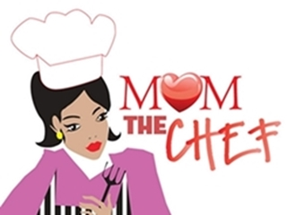

Feita com muito amor, carinho e talento, a panqueca da Elza, mãe orgulhosa e incrivelmente talentosa na cozinha, sempre foi um dos pratos preferidos e mais pedidos pela família sendo um sucesso absoluto.
Fundada em 2016, nasceu a idéia da Panqueca da Mamãe, com a missão de trazer para a cidade a mesma sensação gostosa e aconchegante da qual a família da mamãe sempre sente ao provar suas panquecas.
Atualmente já somos referência em sabor, qualidade, delivery e especialidade em panquecas na cidade, mas ainda assim sem perder aquele toque caseiro e aconchegante de carinho e amor.
Te convido a ter essa experiência gastronômica e garanto que não irá se arrepender! Eai? Partiu Panquecar!?
© Copyright Panqueca da Mamãe - 2022